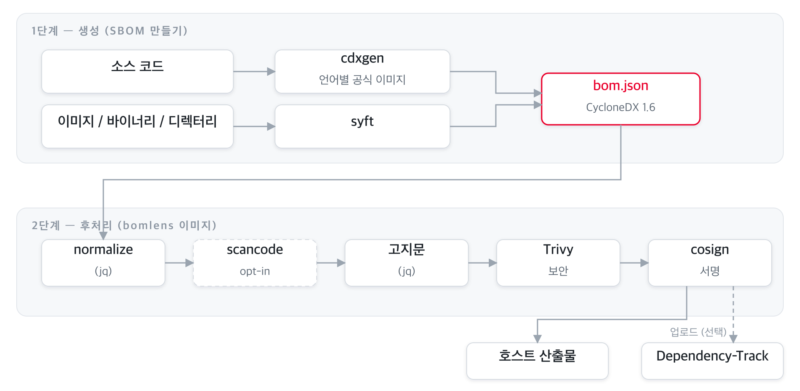
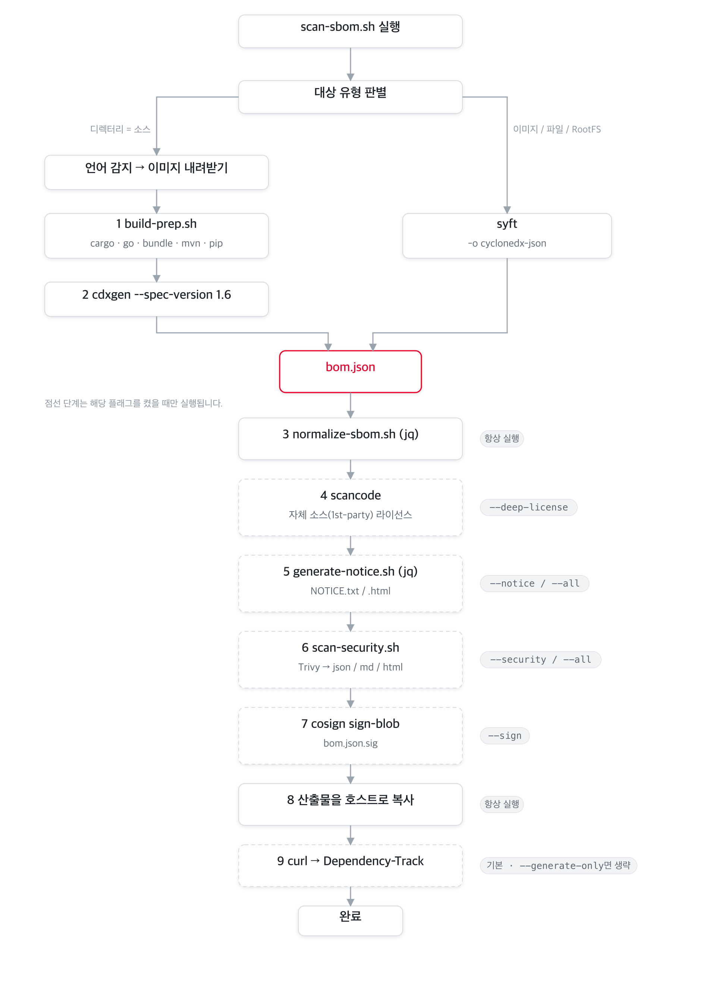
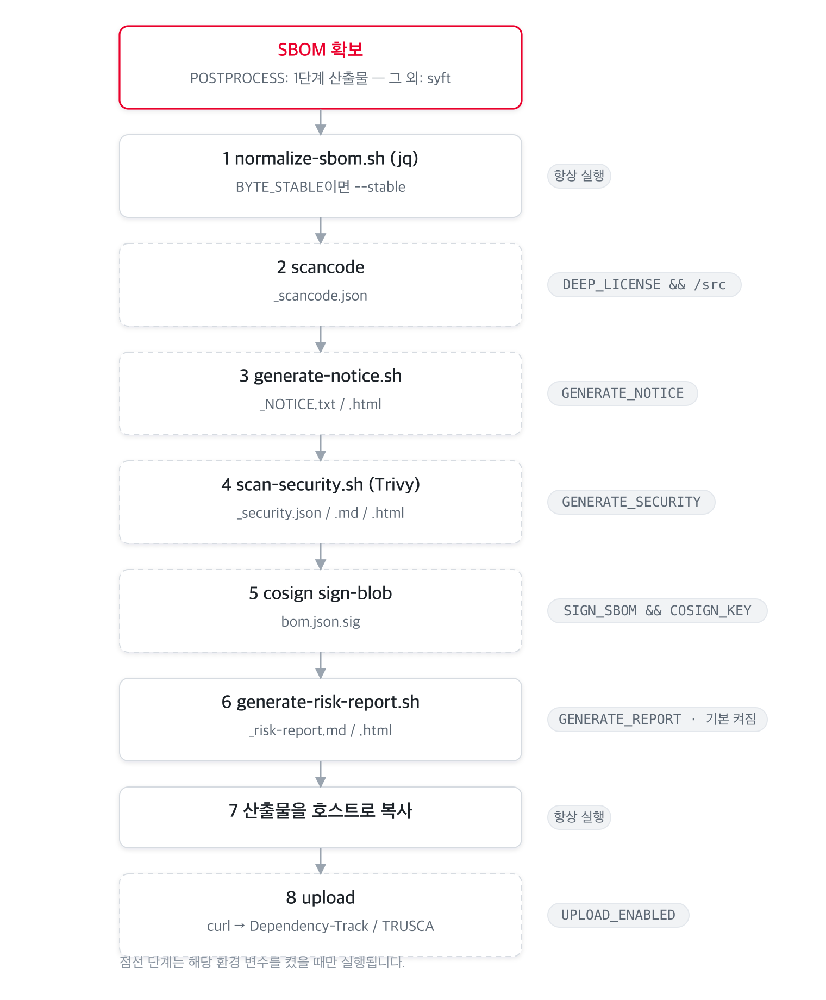

아키텍처¶
BomLens의 전체 시스템 구조와, 스캔 파이프라인에서 각 도구가 어느 단계에서 어떤 순서로 호출되는지 설명합니다.
입력 형태별 도구 흐름 — 소스코드(ScanCode·SCANOSS 옵션), 펌웨어, 받은 SBOM, AI 모델 — 은 입력 형태별 파이프라인을 참고하세요.
이 문서는 현재 구현된 2단계(2-stage) 아키텍처를 기준으로 작성되었습니다. 소스 코드의 Stage 1 라우팅(언어 감지 후 cdxgen 공식 언어 이미지 실행)은
scripts/scan-sbom.sh에 구현되어 동작합니다.
한눈에 보기¶
BomLens는 두 종류의 Docker 이미지가 협력하는 2단계 파이프라인입니다.
- Stage 1 — 생성: 소스 코드는 cdxgen 언어별 공식 이미지가, 컨테이너 이미지·바이너리·디렉터리는 syft가 SBOM(CycloneDX 1.6)을 만듭니다.
- Stage 2 — 후처리: 경량
bomlens이미지가 SBOM을 받아 정규화, (정밀 라이선스), 고지문, 보안 보고서, 서명, 업로드를 차례로 수행합니다.

오케스트레이션의 단일 진입점은 scripts/scan-sbom.sh(Windows는 scan-sbom.bat)이며, 사용자는 이 스크립트 하나만 호출합니다.
왜 2단계인가¶
기존에는 모든 언어 런타임 + 분석 도구를 하나의 거대한 이미지에 담았습니다. 재설계된 파이프라인은 책임을 둘로 나눕니다.
| Stage 1 이미지 | Stage 2 이미지 (bomlens) |
|
|---|---|---|
| 역할 | 소스 → SBOM 생성 | SBOM 후처리(정규화·고지문·보안·서명·업로드) + syft 스캔 |
| 구성 | cdxgen 공식 언어별 이미지 (java·python·node·…) | 언어 toolchain 없음 — debian:12-slim 경량 |
| 획득 | 프로젝트 언어 감지 후 on-demand pull | 한 번 pull해서 재사용 |
| 이점 | 언어별 최신 toolchain을 cdxgen이 직접 관리 | 이미지가 작고, 도구 버전 고정으로 재현성 확보 |
주류 5개 언어(java, python, node, dotnet, php)는 cdxgen 공식 이미지로 검출이 동일하고, go와 ruby, rust에서 toolchain 보강(
build-prep.sh)이 결정적으로 우수합니다. 측정 데이터는 README "Why a Docker image?"를 참조하세요.
도구 인벤토리¶
파이프라인에서 호출되는 도구와 버전 고정(공급망 위생) 현황입니다.
| 도구 | 버전 | 단계 | 역할 | 활성 조건 |
|---|---|---|---|---|
| cdxgen | 언어 이미지 동봉 | Stage 1 | 소스 코드 SBOM 생성 (--spec-version 1.6) |
MODE=SOURCE |
| build-prep.sh | — | Stage 1 | cdxgen 직전 의존성 보강(cargo·go·bundle·mvn·pip) | MODE=SOURCE |
| syft | v1.51.0 |
Stage 1 | 이미지·바이너리·RootFS 스캔 | MODE=IMAGE/BINARY/ROOTFS |
jq (normalize-sbom.sh) |
— | Stage 2 | SBOM 정규화·정렬 | 항상 |
| ScanCode Toolkit | 32.5.0 |
Stage 2 | 1st-party 소스 정밀 라이선스 탐지 | --deep-license (opt-in 빌드) |
| SCANOSS | 1.54.2 |
Stage 2 | 패키지 매니저 없는 C/C++ 소스의 vendored 오픈소스 식별 | --identify-vendored |
jq (generate-notice.sh) |
— | Stage 2 | 오픈소스 고지문(NOTICE) 생성 | --notice / --all |
| Trivy | v0.74.0 |
Stage 2 | 취약점(CVE) 보안 보고서 | --security / --all |
| Cosign | v2.6.5 |
Stage 2 | SBOM detached 서명 | --sign |
| curl | — | Stage 2 | Dependency-Track 업로드 | 기본(=--generate-only 아님) |
버전은
docker/Dockerfile의ARG로 고정됩니다. 이미지 경량화를 위해 ScanCode는 opt-in 빌드 인자입니다(--build-arg SBOM_DEEP_LICENSE=true). SCANOSS 클라이언트는 기본 포함이며, 빼려면--build-arg SBOM_SCANOSS=false로 빌드합니다. 펌웨어 언팩·식별(unblob, cve-bin-tool)은 별도 opt-inbomlens-firmware이미지에, AI 모델 SBOM 생성(OWASP AIBOM Generator)은bomlens-aibom에 들어갑니다. 입력 형태별 도구 흐름은 입력 형태별 파이프라인을 참고하세요.
전체 파이프라인 흐름¶
도구 호출 순서를 한 장으로 본 그림입니다. 점선 박스는 플래그로 켜지는 선택적 단계입니다.

사용자 호출부터 후처리까지의 시퀀스:
sequenceDiagram
autonumber
actor U as 사용자
participant S as scan-sbom.sh
participant D as Docker
participant L as Stage1 언어 이미지
participant P as bomlens (run-scan)
U->>S: scan-sbom.sh --project App --version 1.0 --all
S->>S: 인자 파싱 · 대상 타입 감지
rect rgb(227,242,253)
note over S,L: Stage 1 — 생성
S->>D: (소스) 언어 이미지 docker run
D->>L: build-prep.sh → cdxgen
L-->>S: bom.json
end
rect rgb(241,248,233)
note over S,P: Stage 2 — 후처리
S->>D: bomlens docker run (MODE=POSTPROCESS)
D->>P: run-scan (entrypoint)
P->>P: normalize → scancode → notice → Trivy → cosign
P->>P: 산출물 호스트 복사
P-->>U: (옵션) Dependency-Track 업로드
endStage 1 — SBOM 생성¶
대상 타입에 따라 생성 도구가 갈립니다.
소스 코드 (MODE=SOURCE) — cdxgen 언어 이미지¶
scan-sbom.sh가 detect_lang()으로 프로젝트 언어를 감지하고, img_for_lang()으로 해당 cdxgen 공식 언어 이미지를 골라 pull한 뒤, 그 이미지 안에서 build-prep.sh를 실행합니다(scripts/scan-sbom.sh:138-208). 후처리 경량 이미지에는 언어 toolchain이 없으므로, 생성은 전적으로 언어 이미지가 담당합니다.
언어별 cdxgen 이미지 매핑은 다음과 같습니다 (scan-sbom.sh:158-177, 태그는 CDXGEN_TAG로 고정).
| 감지 언어 | 이미지 |
|---|---|
| rust | cdxgen-debian-rust |
| go | cdxgen-debian-golang124 |
| ruby | cdxgen-debian-ruby34 |
| java | cdxgen-temurin-java21 |
| python | cdxgen-python312 |
| node | cdxgen-node20 |
| php | cdxgen-debian-php84 |
| dotnet | cdxgen-debian-dotnet9 |
| android | 자체 빌드 bomlens-android-sdk<API> (compileSdk 자동 추출) |
| mixed / unknown | cdxgen all-in-one (CDXGEN_ALLINONE) |
이미지 안에서의 두 단계:
build-prep.sh(docker/lib/build-prep.sh) — cdxgen 직전 의존성 보강. cdxgen이 자동 해석하지 못하는 생태계(특히 Rust·Go)의 lockfile을 만들어 전이 의존성까지 노출시킵니다. POSIXsh, 실패해도 스캔을 중단시키지 않습니다.
| 생태계 | 동작 | 비고 |
|---|---|---|
| Rust | cargo generate-lockfile |
cdxgen이 cargo를 자동 실행하지 않음 — 필수 |
| Go | go mod download (-mod=mod) |
모듈 그래프 확보 |
| Ruby | bundle lock / install |
lockfile 없을 때만 |
| Maven | mvn dependency:resolve |
경량 안전망 |
| Python | pip install -r requirements.txt |
lockfile 없는 경우 전이 의존성 노출 |
- cdxgen 실행 —
build-prep.sh가 이미지별로 다른 cdxgen 바이너리 경로를 자동 탐지해cdxgen -r --spec-version 1.6 -o bom.json을 실행합니다(build-prep.sh:60-73). 생성된 SBOM은 이어서 Stage 2(MODE=POSTPROCESS) 후처리 이미지로 넘어갑니다.
이미지 / 바이너리 / 디렉터리 — syft¶
bomlens 이미지에 포함된 syft가 직접 SBOM을 생성합니다. (docker/entrypoint.sh)
| MODE | 입력 | syft 호출 |
|---|---|---|
IMAGE |
Docker 이미지 | syft <image> -o cyclonedx-json (docker.sock 마운트 필요) |
BINARY |
단일 파일 | syft file:<path> -o cyclonedx-json (실패 시 최소 SBOM 폴백) |
ROOTFS |
디렉터리 | syft dir:<path> -o cyclonedx-json |
Stage 2 — 후처리 파이프라인¶
bomlens 이미지의 진입점 run-scan(docker/entrypoint.sh)이 SBOM을 받아 고정된 순서로 단계를 실행합니다. 각 단계는 환경변수(=CLI 플래그)로 켜지며, 산출물은 ARTIFACTS 목록에 누적됩니다.

단계별 상세:
| # | 단계 | 스크립트 / 도구 | 조건 | 산출물 |
|---|---|---|---|---|
| ① | 정규화 | normalize-sbom.sh (jq) |
항상 (--byte-stable이면 결정론적 모드) |
bom.json 갱신 |
| ② | 정밀 라이선스 | scancode |
--deep-license + /src 존재 |
_scancode.json |
| ③ | 고지문 | generate-notice.sh (jq) |
--notice / --all |
_NOTICE.txt, _NOTICE.html |
| ④ | 보안 보고서 | scan-security.sh (Trivy) |
--security / --all |
_security.{json,md,html} |
| ⑤ | 서명 | cosign sign-blob |
--sign + COSIGN_KEY |
bom.json.sig |
| ⑥ | 위험분석보고서 | generate-risk-report.sh |
기본 (--no-report로 생략) |
_risk-report.{md,html} (+ ANALYZE면 _conformance.*) |
| ⑦ | 호스트 복사 | cp |
항상 | HOST_OUTPUT_DIR로 복사 |
| ⑧ | 업로드 | curl |
기본 (--generate-only이면 생략) |
Dependency-Track 서버 또는 TRUSCA 네이티브 ingest로 업로드 (UPLOAD_TARGET로 선택) |
순서가 고정인 이유: 정규화는 이후 모든 단계의 입력을 안정화하므로 가장 먼저, 서명은 최종
bom.json을 대상으로 해야 하므로 가장 나중에 실행됩니다. 각 단계는 실패해도|| true/경고로 처리되어 전체 스캔을 중단시키지 않습니다(서명·업로드 제외).
입력 타입별 분기¶
scan-sbom.sh는 --git/--analyze/--firmware와 --target 값을 보고 모드를 자동 결정합니다.
위에서부터 순차로 판정합니다(먼저 맞는 분기 채택).
flowchart TD
D1{"--git URL<br/>또는 URL형 target?"} -->|예| R1["clone → MODE=SOURCE"]
D1 -->|아니오| D2{"--target<br/>*.zip / *.tar.gz?"}
D2 -->|예| R2["압축 해제 → MODE=SOURCE"]
D2 -->|아니오| D3{"--analyze sbom?"}
D3 -->|예| R3["MODE=ANALYZE<br/>검증 + CDX 변환"]
D3 -->|아니오| D4{"target 미지정?"}
D4 -->|예| R4["MODE=SOURCE<br/>현재 디렉터리 → cdxgen"]
D4 -->|아니오| D5{"존재하는 파일?"}
D5 -->|"예 · --firmware/확장자"| R5["MODE=FIRMWARE<br/>opt-in 펌웨어 이미지"]
D5 -->|"예 · 그 외"| R6["MODE=BINARY → syft"]
D5 -->|아니오| D6{"존재하는 디렉터리?"}
D6 -->|예| R7["MODE=ROOTFS → syft"]
D6 -->|아니오| R8["MODE=IMAGE → syft"]
--ui는 위 분기와 별개로MODE=UI(웹 서버server.py)를 띄우고, 후속 스캔을 폼/업로드로 실행합니다.
| 모드 | 트리거 | 생성 도구 | 비고 |
|---|---|---|---|
SOURCE |
target 미지정 · --git <url> · --target *.zip/*.tar.gz |
cdxgen | 언어 감지 → 언어별 이미지. git는 clone, 아카이브는 자동 해제 후 소스로 처리. (웹 UI의 SOURCE는 컨테이너 내 syft dir:) |
ANALYZE |
--analyze <sbom> (별칭 --sbom) |
— | 공급사 SBOM(CycloneDX/SPDX) 검증 → CDX 변환 → 재집계. _conformance.* 생성 |
FIRMWARE |
--target <file> --firmware 또는 펌웨어 확장자 |
unblob + syft + cve-bin-tool | opt-in 이미지 bomlens-firmware. 상세 펌웨어 분석 가이드 |
BINARY |
--target <파일> |
syft | file: 스킴 |
ROOTFS |
--target <디렉터리> |
syft | dir: 스킴 |
IMAGE |
--target <이미지명> |
syft | docker.sock 마운트 |
AIBOM |
--model <owner/name> |
OWASP AIBOM Generator | opt-in 이미지 bomlens-aibom. HuggingFace 모델 카드로 CycloneDX 1.7 ML-BOM 생성, G7 적합성 검사 추가 |
MODELFILE |
--model-file <경로> |
identify-model-file.py(표준 라이브러리) |
기본 이미지, 오프라인. 모델 파일 헤더로 CycloneDX 1.7 ML-BOM 생성(GGUF, safetensors, PyTorch, pickle, npz, npy, ONNX), 같은 G7 검사 추가 |
DATASET |
--model <Figshare 항목> |
scan-figshare.py(표준 라이브러리) |
기본 이미지. 공개 Figshare 항목 조회로 연구 데이터셋을 읽는다(계정 불필요). 라이선스, DOI, 저자, 파일별 MD5 값이 CycloneDX 1.7 data 컴포넌트가 된다 |
UI |
--ui |
— | 브라우저 UI, 모든 스캔 대상을 폼/업로드로 실행 |
플래그 ↔ 단계 매핑¶
CLI 플래그가 어떤 환경변수로 변환되어 어느 단계를 켜는지 정리합니다 (scan-sbom.sh가 변환해 entrypoint.sh로 전달).
| 플래그 | 환경변수 | 켜지는 단계 |
|---|---|---|
| (기본) | GENERATE_REPORT=true (+ notice·security) |
normalize + 위험분석보고서 + 업로드 |
--no-report |
GENERATE_REPORT=false |
위험분석보고서·고지문·보안 강제 활성화 안 함 |
--notice |
GENERATE_NOTICE=true |
③ 고지문 |
--security |
GENERATE_SECURITY=true |
④ 보안 보고서 |
--all |
위 둘 다 | ③ + ④ |
--git <url> / --branch |
(호스트에서 clone) | SOURCE 입력 수집 |
--analyze <sbom> |
MODE=ANALYZE |
공급사 SBOM 검증·변환·보고서 |
--firmware |
MODE=FIRMWARE (펌웨어 이미지) |
언팩 → syft + cve-bin-tool |
--model <owner/name> |
MODE=AIBOM (aibom 이미지) |
HuggingFace 모델로 ML-BOM 생성 + G7 검사 |
--model-file <경로> |
MODE=MODELFILE |
모델 파일 헤더를 오프라인으로 읽어 ML-BOM 생성 + G7 검사 |
--model <Figshare 항목> |
MODE=DATASET |
공개된 데이터셋을 Figshare 항목에서 기술, 계정 불필요 |
--deep-license |
DEEP_LICENSE=true |
② scancode |
--byte-stable |
BYTE_STABLE=true |
① 결정론적 정규화 (웹 UI의 Reproducible output 토글도 동일) |
--sign |
SIGN_SBOM=true (+ COSIGN_KEY/COSIGN_PASSWORD) |
⑤ 서명 |
--generate-only |
UPLOAD_ENABLED=false |
⑦ 업로드 생략 |
--ui |
MODE=UI |
웹 UI |
위험분석보고서(
_risk-report.{md,html})는 모든 모드에서 기본 생성됩니다(라이선스+취약점 집계). 이를 위해 고지문·보안 스캔이 자동으로 함께 켜지며,--no-report로 끌 수 있습니다.
각 기능의 사용법은 고지문·보안 보고서 가이드를 참조하세요.
산출물¶
{P}=프로젝트 이름, {V}=버전 (특수문자는 _로 정규화).
| 파일 | 생성 조건 |
|---|---|
{Project}_{Version}_bom.json |
항상 (CycloneDX 1.6; AI 모델은 1.7 ML-BOM) |
{Project}_{Version}_NOTICE.txt / .html / .pdf |
--notice / --all / 위험분석보고서 기본 생성 시 (PDF는 SBOM_PDF 빌드에서만) |
{Project}_{Version}_security.json / .md / .html |
--security / --all / 위험분석보고서 기본 생성 시 |
{Project}_{Version}_risk-report.md / .html |
기본 (전 모드) — --no-report로 생략 |
{Project}_{Version}_conformance.json / .md / .html |
--analyze (공급사 SBOM 검증) |
{Project}_{Version}_scancode.json |
--deep-license |
{Project}_{Version}_bom.json.sig |
--sign |
확장 포인트¶
새 언어 지원 추가¶
- 해당 언어의 cdxgen 공식 이미지가 있는지 확인 — 있으면 라우팅 테이블에 추가.
- cdxgen이 전이 의존성을 자동 해석하지 못하면
docker/lib/build-prep.sh에 보강 로직 추가. examples/{언어}/에 예제 프로젝트,tests/cases/test-{언어}.sh에 테스트 케이스 추가.
자세한 절차: 패키지 매니저 추가 가이드.
새 후처리 단계 추가¶
docker/lib/에 헬퍼 스크립트를 추가하고, entrypoint.sh의 공통 파이프라인 구간(정규화 이후)에서 환경변수 가드와 함께 호출한 뒤 산출물을 ARTIFACTS에 추가합니다. 서명 단계보다 앞에 배치해야 산출물이 서명 대상에 포함됩니다.
설계 원칙¶
- 격리성 — 모든 분석은 Docker 컨테이너에서 수행, 호스트 환경 무오염.
- 책임 분리 — 생성(Stage 1)과 후처리(Stage 2)를 분리해 후처리 이미지를 경량화.
- 재현성 — 도구 버전을
ARG로 고정,--byte-stable로 바이트 동일 출력. - 표준 준수 — CycloneDX 1.6 스펙 준수.
- 견고성 — 후처리 단계는 실패해도 전체 스캔을 중단시키지 않음.
- 단일 인터페이스 — 모든 언어·모드를
scan-sbom.sh하나로 호출.
역할 분담 (TRUSCA)¶
BomLens는 생성(generation) 전문 도구입니다. 전사(全社) 프로젝트 관리, 취약점 분류, 라이선스 정책 게이트 같은 거버넌스는 자매 프로젝트 TRUSCA(구 TrustedOSS Portal)에 위임합니다. 두 도구 모두 cdxgen/Trivy를 공유하므로 산출물(CycloneDX)이 그대로 호환됩니다.
flowchart TB
subgraph dev["개발자 · 단일 프로젝트"]
direction LR
A["소스 / 이미지 / 바이너리"] --> B["BomLens"]
B --> C["SBOM"]
B --> D["고지문"]
B --> E["보안 보고서"]
end
subgraph org["조직 · 전체 관리"]
direction LR
F["TRUSCA"] --> G["취약점 triage"]
F --> H["라이선스 정책 게이트"]
F --> I["프로젝트 대시보드"]
end
C -. 업로드 .-> F관련 문서: 입력 형태별 파이프라인 | 시작하기 | CLI 레퍼런스 | Docker 이미지 직접 사용 | 패키지 매니저 추가